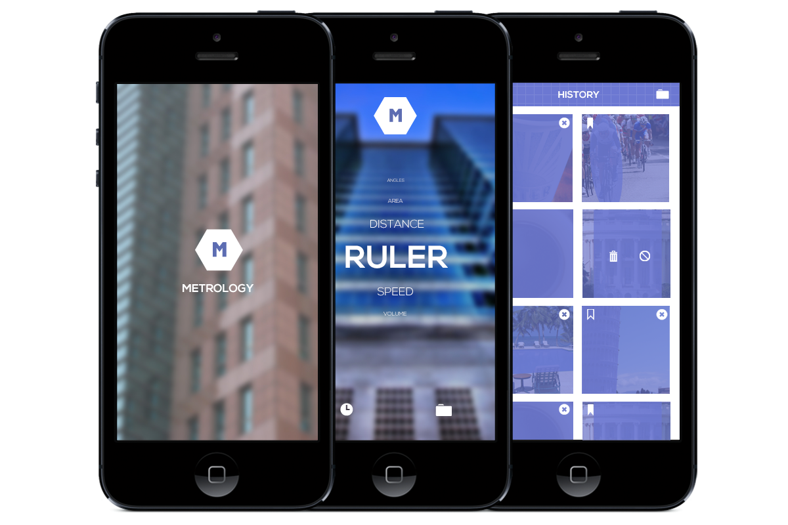

Metrology
Measurement App (Student Project)
Metrology is a measurement app designed for the iOS. It contains multiple tools for taking everyday measurements by using the camera or an existing photo. You can also save the results for later use.
